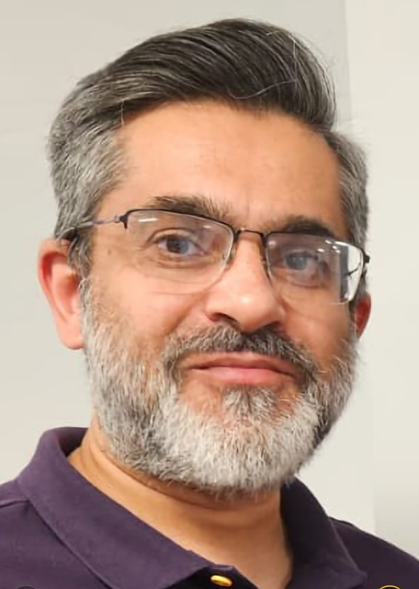

Build trust
I listen first, understand the underlying issues, and earn people's trust before creating structure, accountability and momentum. I don't believe in creating unnecessary friction to demonstrate authority.
Entrepreneur and business leader with over 20 years of experience delivering enterprise IT solutions and capital programs across healthcare, energy, logistics, and telecom.

I'm an entrepreneur and a business leader with over 20 years of experience helping organizations navigate complex challenges, transform operations, and turn strategic ideas into measurable business outcomes using technology solutions.
Throughout my career, I've worked at the intersection of business strategy, technology, and people, leading transformation initiatives, managing enterprise projects, building high-performing teams, and developing strong relationships with executives, stakeholders, clients, and technology partners.
My experience spans multiple industries, including energy, healthcare, insurance, telecommunications, and professional services. I've led initiatives involving enterprise applications, digital transformation, business process optimization, systems integration, technology governance, and organizational change.
What has consistently defined my approach is the ability to understand the bigger picture while remaining grounded in execution. I enjoy bringing structure to complex situations, connecting people with different perspectives, building consensus, and helping teams move from uncertainty to meaningful progress.
Over the years, I've had the opportunity to lead diverse teams, advise senior executives, work with clients and vendors, and deliver initiatives that improve operational efficiency, strengthen business capabilities, and create lasting value. I enable large transformation with a focus on Organizational Change Management.
My management style is collaborative and inclusive. I focus on building cross-functional buy-in and leading through influence to move complex initiatives forward. At the heart of what I do is a simple philosophy, to build trust, bring clarity to complexity, and empower people.
Build trust.
Bring clarity to complexity.
Empower people.
I listen first, understand the underlying issues, and earn people's trust before creating structure, accountability and momentum. I don't believe in creating unnecessary friction to demonstrate authority.
I'm often brought in where there are competing priorities, difficult stakeholders, or projects that need direction. I bring structure so teams can move from uncertainty to meaningful progress.
My management style is collaborative and inclusive. I build cross functional buy in and lead through influence. I've mentored 30 employees, and seven of them were promoted into management roles.
“Successful transformation is rarely just about technology. It's about understanding business needs, earning people's trust, challenging conventional thinking, and creating an environment where people can work together toward a common goal.”
I provide strategic technology leadership and program management advisory across a diverse portfolio of client engagements involving custom and ERP applications, serving as a trusted partner to the C suite and executive leadership. My focus is on aligning technology initiatives with business strategy, investment priorities and measurable organizational outcomes, with stakeholder management at the center of my role.
I direct a portfolio of enterprise digital initiatives spanning ERP, custom application development, AI and operational technology, and provide data driven insights to the CEO and VP that shape strategic decisions and program prioritization. With client executives, I prioritize technology investments based on business value, delivery capacity and financial constraints, and I establish governance through portfolio reviews, stage gate approvals, RAID management, change governance and executive steering committee reporting.
I lead vendor evaluation, software selection and contract negotiations, then hold partners accountable through scope negotiation, scorecards and SLAs. I oversee multidisciplinary teams of developers, architects, QA analysts, business analysts and functional leads, leading Agile delivery in a CI/CD pipeline with Azure DevOps. As the primary liaison to executive stakeholders, I deliver governance reporting, risk mitigation and escalation management, working with clients as a partner rather than a provider.
I led digital transformation engagements in liquid terminal storage and transport, bridging business strategy, enterprise technology and operational excellence. Working closely with client leadership, I directed a portfolio of IT and OT initiatives for midstream oil & gas clients covering terminal operations, enterprise asset management and ERP modernization within an Agile framework.
I led integrations that pulled SCADA and HMI data into SAP and connected Honeywell Terminal Manager for rail, truck and marine scheduling. I deployed Class 1 Division 2 field tablets for paperless rail and marine operations, cutting spotting time by 20%, and automated railcar arrivals and departures through the Union Pacific API, reducing planner effort by 35%. Integrating Hexagon EAM with SAP and Coupa reduced corrective work orders by 20%, and predictive maintenance models increased MTBF by 50% (from 1,000 to 1,500 hours) and reduced downtime by 20%.
I managed scope, schedule, budget and risk for capital OT projects, reporting to the VP Operations through KPI dashboards on cost, schedule and compliance. I reduced MRO spend by 15%, automated PR/PO processes and improved safety and regulatory compliance ratings. I increased billing by $300K per year through accurate SAP documentation of post delivery railcar storage and ancillary services such as nitrogen blanketing and flaring. I also led organizational change management, stakeholder communications and training programs to drive adoption across field and corporate operations.
As Business Relationship Manager, I provided enterprise technology leadership in a complex healthcare and insurance environment, connecting business strategy with technology delivery. I partnered with senior executives in the Health, Dental, Pharmacy and Life business units to identify priorities, define technology roadmaps and align digital solutions with business and customer experience goals.
I led a multidisciplinary team of 30 business analysts, QA analysts, developers and architects supporting health, dental, drug, life and benefits administration platforms. I managed end to end delivery including scope, schedules, budgets, resources, risks, dependencies and vendor coordination, with executive dashboards for data driven decisions, and directed Agile practices from backlog management and sprint planning to stakeholder workshops.
I applied DMAIC principles for continuous improvement across claims administration and healthcare operations, managed vendors through RFx processes, contract negotiation and SLA governance, and served on governance committees for project oversight and strategic planning. I brought Voice of the Customer feedback into member facing digital solutions, and supported the implementation of Alberta's COVID-19 vaccination program in under two weeks with the Pharmacy and Claims teams.
I managed the enterprise Sales and Finance application portfolios supporting a $125M Oracle ERP implementation, and led delivery teams responsible for healthcare application projects, production support and defect remediation. I managed annual budgets, resource planning, project prioritization and portfolio reporting, and supported organizational change management for the enterprise technology transformation.
I represented my business unit on governance and innovation committees responsible for technology investments, and improved member privacy and security through enhancements to enterprise Identity and Access Management (IAM) and Role Based Access Control (RBAC).
I led business analysis through the SDLC for a major enterprise healthcare administration system, facilitating workshops, documenting business processes, and developing use cases and functional specifications. I coordinated cross functional teams to prioritize work, manage dependencies and improve operational efficiency, and supported testing strategy, UAT planning, production implementation and post production support. My process improvements reduced software production costs by 20% and software defects by 30%.
I founded and self financed a technology and business services company delivering solutions across telecommunications, contact centers, telemedicine and digital health, combining entrepreneurial leadership with technology consulting, program delivery and customer engagement.
I managed inbound and outbound contact center operations for major U.S., UK and Canadian telecom companies, covering customer support, telemarketing, virtual assistance, customer surveys and retention. With hospitals and medical organizations, I developed telemedicine and digital health solutions for remote consultations, interactive continuing medical education and live transmission of surgical procedures to remote audiences. I launched an anonymous, IVR driven toll free HIV helpline; a 24/7/365 medical advice hotline that routed callers to medical students and escalated to physicians when needed; and universal access numbers that let patients reach physicians across multiple practice locations through a single number.
I also provided bespoke software development and IT consulting to local and multinational organizations, partnered with marketing and technology firms on engagements involving Microsoft, Dell, LG and Tetra Pak, and led digital marketing across social media, SEO, surveys, webinars, roadshows and product launches. A sustainability focused web portal I developed for the recycling community was selected for TechCrunch50 (2009) and won the Marriott Small Business Challenge for design and functionality.
I established and operated a T-Mobile franchise, overseeing the business from commercial strategy through day to day operations. The franchise represented major U.S. carriers including T-Mobile, AT&T, Sprint PCS and Verizon, and I was responsible for sales, customer experience, operational execution and business financials. The business was later sold so I could start my next entrepreneurial venture.
I analyzed sales performance, customer acquisition costs, revenue per user, retention and churn to guide marketing spend, sales strategy, product mix and growth decisions, and evaluated customer decision journeys across retail and assisted service channels to improve conversion and lifetime customer value. In partnership with corporate, I led customer experience initiatives using journey mapping, surveys and feedback analysis, and extended engagement beyond retail by establishing a customer service and retention call center handling inquiries, issue resolution, renewals and cross selling.
I worked in PwC's Management Consulting Services CRM practice, delivering enterprise technology and business transformation engagements for major telecommunications and technology organizations, gaining broad experience across CRM, contact center solutions, enterprise infrastructure and business systems.
I delivered CRM implementation initiatives for Ameritech in Chicago, and coordinated call center deployments for Sprint across Dallas and Kansas City, aligning landline and mobile billing and customer support operations. I implemented data center initiatives with Equinix and Cisco in San Jose, delivered a workforce management system for Level 3 Communications in Boulder, and supported a call center deployment for Chicago's 911 emergency dispatch operations in collaboration with AT&T.
Implemented the full maintenance lifecycle: asset hierarchy, work requests, planning and scheduling, purchasing and MRO inventory. Integrated with SAP for financials and Coupa for procurement, with predictive analytics moving work from reactive to planned.
Integrated SCADA/HMI field data with SAP and Honeywell Terminal Manager for one source of truth on tank levels and movements. Automated railcar tracking through Union Pacific's APIs so arrivals and departures flowed straight into planning.
Deployed Class I Division 2 certified tablets so operators could confirm railcar spotting, complete inspections and submit work requests from hazardous areas. Supported by a structured change management program.
Oversaw enhancements to a custom workforce management application, adding a timesheet management module integrated with Workday and Sage Intacct. Led IT due diligence for multiple acquisitions, assessing technology environments, applications and integration needs, and oversaw Microsoft 365 cybersecurity assessments. Ran a vendor selection across multiple business workflows, from outreach and product demos to stakeholder surveys and evaluation scorecards.
Stood up the government led vaccination program in under two weeks at the start of the pandemic, including pharmacy enrolment and direct bill claiming through real time adjudication.
Redesigned the benefit selection tool into a simple, personalized, mobile friendly experience. Cleaner enrolment data improved the accuracy of eligibility and plan selections.
Brought the Voice of the Customer into the app through journey mapping and scorecards, adding claim submission, receipt upload by photo, biometric sign in and digital ID cards.
Moved every authorizer, specialty assessor, supplier and vendor onto a custom online provider portal for eligibility checks, authorizations and claims in one place.
Managed the Sales and Finance application portfolios supporting the organization's largest ever project: replacing its legacy administration platform with Oracle.
Customized the healthcare claims adjudication engine for the Alberta School Employee Benefit Plan, applying its own plan rules so members get a personalized experience.
Developed remote consultation services, interactive medical education programs and live surgical broadcasts with hospitals and medical organizations.
Established toll free health hotlines with 24/7 call routing and escalation, plus universal access numbers connecting patients to physicians across multiple locations.
Jointly developed a sustainability focused web portal for the recycling industry.
I'm open to leadership roles in IT programs, portfolio management and digital transformation.